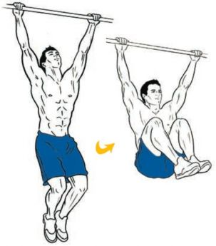
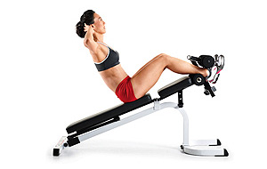
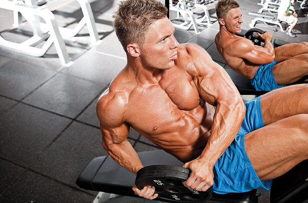
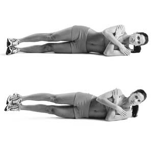

The ULTIMATE, Ryan Reynolds Six Pack Abs Workout
|
|
Excercis | Muscle Focus | Set | Reps |
|---|---|---|---|---|
| 1 | Hanging Leg Raises | Low Abs, Abs (all) | 2 | 15 |
| 1a | Hanging Knee Raises | Low Abs, Abs (all) | 2 | 15 |
| 2 | Weighted Swiss Ball Crunches | Rectus Abdominis | 2 | 25 |
| 3 | Decline Weighted Sit-Ups | Rectus Abdominis | 2 | 15 |
| 3a | Russian Twists | Obliques | 2 | 10 |
| 4 | Oblique Holds | Obliques | 1 | 45 sec/side |
1. Hanging Leg Raises

How to
Protocol: 2 sets — 15 reps
Target Muscle(s): Lower Abs, Abs (All)
- Hang from a pull-up bar with your hands at shoulder-width.
- While keeping your back straight, contract your lower abs and slowly raise your legs until they’re parallel with the floor. Do not swing, rock, or use momentum and keep your legs straight.
- Slowly lower down to the bottom and repeat for 15 reps
Hanging Leg Raises are too difficult at first, replace with Roman Chair Leg Raises.
1a Hanging Knee Raises
How to
Protocol: 2 sets — 15 reps
Target Muscle(s): Lower Abs, Abs (All)
- Immediately complete 10 Hanging Knee Raises. Instead of raising your legs straight, bend your knees and bring them up into your belly.
2. Weighted Swiss Ball Crunches

How to
Protocol: 2 sets — 25 reps
Target Muscle(s): Rectus Abdominis
- Lie with your middle back on a Swiss ball and hold a weight plate/dumbbell/medicine ball behind your head.
- Contract your core and crunch forward. Squeeze for 1 second and slowly release back down over the top of the ball.
3. Decline Weighted Sit-Ups
How to
Protocol: 2 sets — 25 reps
Target Muscle(s): Rectus Abdominis
- Lie on a decline bench and hold a weight plate/dumbbell/medicine ball on your chest.
- Contract your core and crunch upwards. Squeeze for 1 second and release slowly back down to start
3a. Russian Twists
How to
Protocol: 2 sets — 10 reps
Target Muscle(s): Obliques
- Immediately complete 10 Russian Twists — 1 rep includes a twist to the left and right. Make sure to keep your back straight and core tight throughout.
4. Oblique Holds
How to
Protocol: 45 seconds per side
Target Muscle(s): Obliques
- Lie on your left side and prop up your upper body with your forearm.
- While holding a light weight plate in between your feet, raise your legs about 6 inches off of the ground, SQUEEEEZE your obliques, and hold the position for 45 seconds. Switch to the other side and repeat.